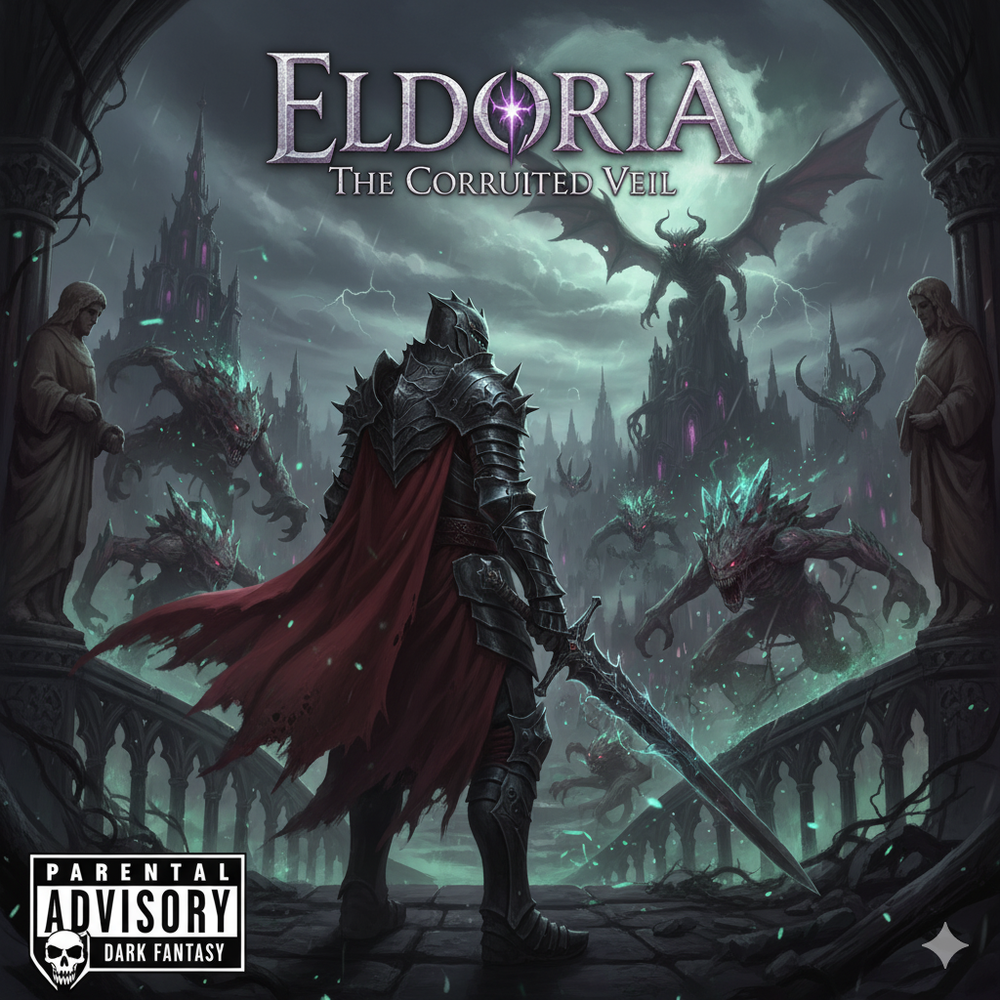

Aetherium Gate

Um reino medieval outrora glorioso caiu em desgraça, corrompido por uma praga mágica que transforma criaturas e almas. O jogador é um herói solitário, um exilado ou um cavaleiro das sombras, que deve desvendar os mistérios da corrupção e lutar contra monstros grotescos e senhores das trevas para restaurar ou condenar o reino. A atmosfera é de desespero, sacrifício e combate brutal.
-Em breve.-
Enjoyed this world of imaginary games? Visit the GITHUB of the mind behind this platform. And thank you!
Aetherium Gate @ 2025 Aetherium Gate, Inc.